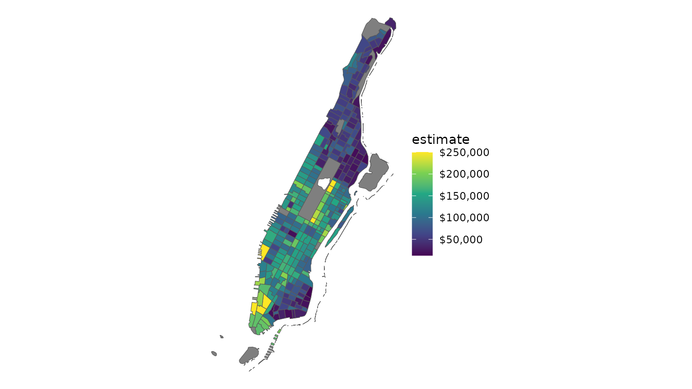

If requested, tidycensus can return simple feature
geometry for geographic units along with variables from the decennial US
Census or American Community survey. By setting
geometry = TRUE in a tidycensus function
call, tidycensus will use the tigris
package to retrieve the corresponding geographic dataset from the US
Census Bureau and pre-merge it with the tabular data obtained from the
Census API.
The following example shows median household income from the 2016-2020 ACS for Census tracts in Orange County, California:
library(tidycensus)
library(tidyverse)
options(tigris_use_cache = TRUE)
orange <- get_acs(
state = "CA",
county = "Orange",
geography = "tract",
variables = "B19013_001",
geometry = TRUE,
year = 2020
)
head(orange)## Simple feature collection with 6 features and 5 fields
## Geometry type: MULTIPOLYGON
## Dimension: XY
## Bounding box: xmin: -118.0096 ymin: 33.77397 xmax: -117.7905 ymax: 33.93992
## Geodetic CRS: NAD83
## GEOID NAME variable
## 1 06059110603 Census Tract 1106.03, Orange County, California B19013_001
## 2 06059011503 Census Tract 115.03, Orange County, California B19013_001
## 3 06059001102 Census Tract 11.02, Orange County, California B19013_001
## 4 06059021812 Census Tract 218.12, Orange County, California B19013_001
## 5 06059001301 Census Tract 13.01, Orange County, California B19013_001
## 6 06059088701 Census Tract 887.01, Orange County, California B19013_001
## estimate moe geometry
## 1 56563 13103 MULTIPOLYGON (((-118.0096 3...
## 2 101800 10306 MULTIPOLYGON (((-117.8984 3...
## 3 99286 18207 MULTIPOLYGON (((-117.9765 3...
## 4 133494 8958 MULTIPOLYGON (((-117.8184 3...
## 5 75994 18045 MULTIPOLYGON (((-117.9766 3...
## 6 54759 7682 MULTIPOLYGON (((-117.9673 3...Our object orange looks much like the basic
tidycensus output, but with a geometry
list-column describing the geometry of each feature, using the
geographic coordinate system NAD 1983 (EPSG: 4269) which is the default
for Census shapefiles. tidycensus uses the Census cartographic
boundary shapefiles for faster processing; if you prefer the
TIGER/Line shapefiles, set cb = FALSE in the function
call.
As the dataset is in a tidy format, it can be quickly visualized with
the geom_sf functionality currently in the development
version of ggplot2:
orange %>%
ggplot(aes(fill = estimate)) +
geom_sf(color = NA) +
scale_fill_viridis_c(option = "magma") 
Please note that the UTM Zone 11N coordinate system
(26911) is appropriate for Southern California but may not
be for your area of interest. For help identifying an appropriate
projected coordinate system for your data, take a look at the {crsuggest} R
package.
Faceted mapping
One of the most powerful features of ggplot2 is its
support for small multiples, which works very well with the tidy data
format returned by tidycensus. Many Census and ACS
variables return counts, however, which are generally
inappropriate for choropleth mapping. In turn,
get_decennial and get_acs have an optional
argument, summary_var, that can work as a multi-group
denominator when appropriate. Let’s use the following example of the
racial geography of Harris County, Texas. First, we’ll request data for
non-Hispanic whites, non-Hispanic blacks, non-Hispanic Asians, and
Hispanics by Census tract for the 2020 Census, using the PL-94171
summary file.
racevars <- c(White = "P2_005N",
Black = "P2_006N",
Asian = "P2_008N",
Hispanic = "P2_002N")
harris <- get_decennial(
geography = "tract",
variables = racevars,
state = "TX",
county = "Harris County",
geometry = TRUE,
summary_var = "P2_001N",
year = 2020,
sumfile = "pl"
)
head(harris)## Simple feature collection with 6 features and 5 fields
## Geometry type: MULTIPOLYGON
## Dimension: XY
## Bounding box: xmin: -95.51535 ymin: 29.80887 xmax: -95.3994 ymax: 29.92537
## Geodetic CRS: NAD83
## # A tibble: 6 × 6
## GEOID NAME variable value summary_value geometry
## <chr> <chr> <chr> <dbl> <dbl> <MULTIPOLYGON [°]>
## 1 48201530200 Census Tra… White 2057 3766 (((-95.45086 29.81984, -…
## 2 48201530200 Census Tra… Black 127 3766 (((-95.45086 29.81984, -…
## 3 48201530200 Census Tra… Asian 239 3766 (((-95.45086 29.81984, -…
## 4 48201530200 Census Tra… Hispanic 1154 3766 (((-95.45086 29.81984, -…
## 5 48201534002 Census Tra… White 388 5653 (((-95.51398 29.92533, -…
## 6 48201534002 Census Tra… Black 685 5653 (((-95.51398 29.92533, -…We notice that there are four entries for each Census tract, with
each entry representing one of our requested variables. The
summary_value column represents the value of the summary
variable, which is total population in this instance. When a summary
variable is specified in get_acs, both
summary_est and summary_moe columns will be
returned.
With this information, we can set up an analysis pipeline in which we calculate a new percent-of-total column and visualize the result for each group in a faceted plot.
harris %>%
mutate(percent = 100 * (value / summary_value)) %>%
ggplot(aes(fill = percent)) +
facet_wrap(~variable) +
geom_sf(color = NA) +
theme_void() +
scale_fill_viridis_c() +
labs(fill = "% of population\n(2020 Census)")
Detailed shoreline mapping with tidycensus and tigris
Geometries in tidycensus default to the Census Bureau’s cartographic boundary shapefiles. Cartographic boundary shapefiles are preferred to the core TIGER/Line shapefiles in tidycensus as their smaller size speeds up processing and because they are pre-clipped to the US coastline.
However, there may be circumstances in which your mapping requires more detail. A good example of this would be maps of New York City, in which even the cartographic boundary shapefiles include water area. For example, take this example of median household income by Census tract in Manhattan (New York County), NY:
library(tidycensus)
library(tidyverse)
options(tigris_use_cache = TRUE)
ny <- get_acs(geography = "tract",
variables = "B19013_001",
state = "NY",
county = "New York",
year = 2020,
geometry = TRUE)
ggplot(ny, aes(fill = estimate)) +
geom_sf() +
theme_void() +
scale_fill_viridis_c(labels = scales::dollar)
As illustrated in the graphic, the boundaries of Manhattan include
water boundaries - stretching into the Hudson and East Rivers. In turn,
a more accurate representation of Manhattan’s land area might be
desired. To accomplish this, a tidycensus user can use the core
TIGER/Line shapefiles instead with the argument cb = FALSE,
then erase water area from Manhattan’s geometry. The
erase_water() function in the tigris R
package will automatically remove proximate water areas from Census
polygons, improving cartographic display. The
area_threshold argument determines the percentile ranking
of the water areas by size in the data’s proximity to retain; the
default, 0.75, will keep the largest 25 percent of areas. Data should be
first transformed to a projected coordinate reference system to improve
performance.
library(tigris)
library(sf)
ny_erase <- get_acs(
geography = "tract",
variables = "B19013_001",
state = "NY",
county = "New York",
year = 2020,
geometry = TRUE,
cb = FALSE
) %>%
st_transform(26918) %>%
erase_water(year = 2020)
ggplot(ny_erase, aes(fill = estimate)) +
geom_sf() +
theme_void() +
scale_fill_viridis_c(labels = scales::dollar)
The map appears as before, but instead the polygons now hug the
shoreline of Manhattan. Setting the same year in
erase_water() as your input data is recommended to avoid
sliver polygons, which are small polygons that can appear as a
result of misaligned overlay operations.
Writing to shapefiles
Beyond this, you might be interested in writing your dataset to a
shapefile or GeoJSON for use in external GIS or visualization
applications. You can accomplish this with the st_write
function in the sf package:
Your tidycensus-obtained dataset can now be used in ArcGIS, QGIS, Tableau, or any other application that reads shapefiles.
There is a lot more you can do with the spatial functionality in tidycensus, including more sophisticated visualization and spatial analysis; look for updates on my blog and in this space.